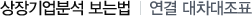

주식교실 ㅣ 기본적분석
1장. 기본적분석이란?
2장. 분석대상
3장. 분석대상-경제분석
4장. 분석대상-산업분석
5장. 분석대상-기업분석
6장. 가치평가에 대하여-가치평가란?
7장. 가치평가에 대하여-가치평가의 주요지표
8장. 가치평가에 대하여-가치평가 관련 잘못된 이해
9장. 가치평가에 대하여-가치평가를 통한 투자전략시 유의사항
10장. 상장기업분석 보는법-기업어음과 회사채 신용등급
11장. 상장기업분석 보는법-루머와 주가와의 관계
12장. 상장기업분석 보는법-주가관련 지표
13장. 상장기업분석 보는법-EV/EBITA를 통한 적정가치 산출물
14장. 상장기업분석 보는법-각종비율에 대한 이해
15장. 상장기업분석 보는법-원가구성과 매출구성에 대한 이해
16장. 상장기업분석 보는법-자본금변동관련 체크포인트
17장. 상장기업분석 보는법-현금흐름분석
18장. 상장기업분석 보는법-추정재무제표
19장. 상장기업분석 보는법-EVA분석
20장. 상장기업분석 보는법-회사채발행내역관련
21장. 상장기업분석 보는법-EPS추정
22장. 상장기업분석 보는법-부채구조
23장. 상장기업분석 보는법-손익분기분석
24장. 상장기업분석 보는법-연결 대차대조표
25장. 상장기업분석 보는법-연결 손익계산서

(단위 : 억원)
구분
98.12
99.12
00.12
유동자산
1,820
1,749
1,562
고정자산
1,501
1,665
1,649
자산총계
3,324
3,414
3,210
유동부채
1,116
1,115
946
고정부채
176
131
119
부채총계
1,292
1,246
1,065
외부주주지분
31
74
75
자본금
250
250
250
자본총계
2,001
2,094
2,070
유동과 고정의 차이는 1년이 기준
자산과 관련 상장이나 등록기업 1개의 경우 유동자산이 많더라도 연결했을 경우 고정자산 비중이 급증하는 경우가 발생할 수 있음. 따라서 해당기업의 재무상태 뿐만 아니라 연결기업의 재무상황에 대한 종합적인 고려가 필요
부채의 경우도 연결대상기업의 부채규모가 많고 부실이 클 경우 전체적인 관점에서 부채규모 축소노력에 대한 점검이 필요. 또한 유사업종을 여러 계열사가 나누어 영위하면서 내부거래가 많은 기업의 경우 재고자산 등 불건전자산이 과다할 가능성이 있음